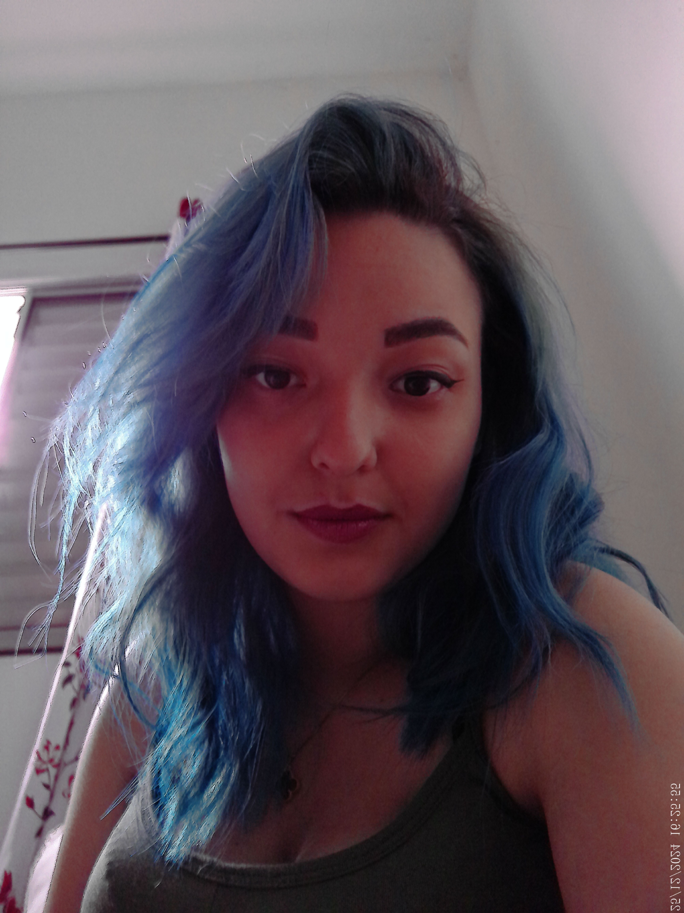

Sobre Mim
Oi! Meu nome é Mysti, mas pode me chamar de Dani. Tenho 19 anos. O que você mais gosta de fazer? Jogar e Gravar, passo o dia todo no PC se precisar Haha, Tem algum hobby ou talento especial? Sei desenha, mais ou menos kkk e jogar seria um hobby? Hahah
Como e por que começou o canal.
No começo, o canal foi criado como um espaço para reflexão e desabafo, um lugar onde eu pudesse compartilhar meus sentimentos. Mas, com o tempo, percebi que queria mais do que isso. Agora, meu maior objetivo é tirar um sorriso do rosto de quem está passando por uma fase difícil. Já estive nessa posição e sei o quanto pequenas alegrias podem fazer a diferença. Minha família e os youtubers que admiro sempre me inspiraram, e hoje, espero poder inspirar outras pessoas também. Seja bem-vindo(a) ao meu mundo!
Conecte-se Comigo
YouTube
Mysti
Twitch
danymisty_s2
Twitter
mysticyt0
Instagram
myst_i07